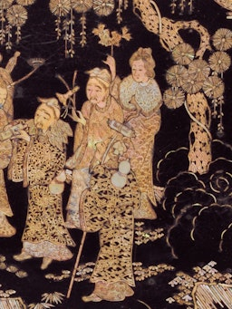

.jpeg)
.jpeg)
Chinese Mythology |
Chinese mythology encompasses a wide range of folklore, history, and religious belief across numerous time periods and peoples, including the present day. Many of these myths are intricately bound to philosophy, religion, tradition, and society. |
________
Chang'eChinese goddess of the moon, best known for stealing the elixir of immortality. |
|
Dragon KingThe “Dragon King,” Chinese god of all waters, weather, and dragons. |
|
|  |
Eight ImmortalsLegendary Chinese heroes who fight for justice and vanquish evil. |
FuxiHumanity's original ancestor in Chinese mythology, husband of Nuwa |
|
GuanyinBenevolent Chinese goddess of mercy, called upon in times of suffering. |
|
Hou YiLegendary archer and Chinese hero, famous for shooting down nine suns. |
|
Jade EmperorThe Supreme Ruler of Heaven in Chinese mythology, first emperor of China |
|
MazuChinese goddess of the sea, patron of sailors, fishermen, and travelers. |
|
NezhaPrecocious Chinese deity who protects teenagers, misfits, and drivers. |
|
NuwaChinese goddess who created all mankind, sister and wife to Fuxi |
|
PanguThe first living being, an ancient Chinese deity who created the world. |
|
Sun WukongThe “Monkey King,” Chinese trickster god known for his impertinence |
|
Xiwangmu“Queen Mother of the West,” powerful Chinese goddess of life and death |
|
Yan WangThe King of Hell, overseer of the Chinese underworld and judge of the dead. |
|
Zhong KuiThe “Demon Hunter,” a popular Chinese protector deity who fights ghosts. |
________
Chinese mythology (traditional Chinese: 中國神話; simplified Chinese: 中国神话; pinyin: Zhōngguó shénhuà) is mythology that has been passed down in oral form or recorded in literature throughout the area now known as Greater China. Chinese mythology encompasses a diverse array of myths derived from regional and cultural traditions. Populated with engaging narratives featuring extraordinary individuals and beings endowed with magical powers, these stories often unfold in fantastical mythological realms or historical epochs. Similar to numerous other mythologies, Chinese mythology has historically been regarded, at least partially, as a factual record of the past.
Along with Chinese folklore, Chinese mythology forms an important part of Chinese folk religion and Taoism, especially older popular forms of it. Many narratives recounting characters and events from ancient times exhibit a dual tradition: one that presents a more historicized or euhemerized interpretation, and another that offers a more mythological perspective.
|
|
|
Numerous myths delve into the creation and cosmology of the universe, exploring the origins of deities and heavenly inhabitants. Some narratives specifically address the topic of creation, unraveling the beginnings of things, people, and culture. Additionally, certain myths are dedicated to the genesis of the Chinese state. A subset myths provides a chronology of prehistoric times, often featuring a culture hero who taught people essential skills ranging from building houses and cooking to the basics of writing. In some cases, they were revered as the ancestor of an ethnic group or dynastic families. Chinese mythology is intimately connected to the traditional Chinese concepts of li and qi. These two foundational concepts are deeply entwined with socially oriented ritual acts, including communication, greetings, dances, ceremonies, and sacrifices.